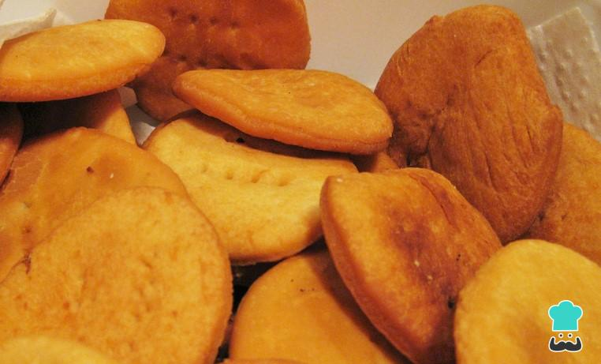

Las sopaipilla es una rica masa frita que se come principalmente en épocas de frío. Es común en muchos países de América Latina y puede acompañarse con distintas salsas y guarniciones, tanto saladas como dulces. Sigue esta sencilla receta y anímate a probar esta delicia.
Para comenzar a preparara la masas de las sopaipillas, mezclaremos la harina, levadura, sal y lentamente el agua. Haz esta preparación sobre una superficie plana o sobre una tabla de amasar.
Agrega la manteca hasta formar una masa y trabaje fuertemente con las manos para que quede lisa; si la masa te queda demasiado blanda agrega harina, deja reposar en un paño 15 a 20 minutos.
Con la masa ya lista, ahora tienes que formar las sopaipillas. Para ello, haz bolitas de masa y estira con los dedos o plantándola haz círculos del tamaño de una taza, no muy gruesos.
Cocinaremos las sopaipillas fritas, así que calienta manteca o aceite en una sartén profunda. Cuando esté esto bien caliente, sumerge las sopaipillas y fríe hasta que estén doradas por ambos lados.
Reserva sobre una servilleta de papel absorbente para eliminar el exceso de aceite y ya podrás disfrutar de tus sopaipillas. Si quieres, puedes acompañarlas con un poco de miel o salsas. ¡Buen provecho!